CS180 Project 1 - Images of the Russian Empire:
Colorizing the Prokudin-Gorskii Photo Collection
Overview
A firm believer that "colored photagraphy was the future," Sergei Mikhailovich Prokudin-Gorskii, a Russian photographer, documented the colorful world with
a set of images for each of the three color channels: red, blue, and green. The technology at the time could not successfully reconstruct the color-decomposed
photagraph into colored images. Luckily, with the advant of computer vision, we can, more than 100 years later, reconstruct the colored photos and look into the
deep time with vivid colors.
Algorithms
Exhaustive Search
First I implemented the exhaustive search for low resolution images. I chose one color (green) as the base layer and attempted to
align the other two layers on the base layer one at a time. To align the layer pairs, I first experimented with a naive exhaustive search without
any preprocessing. I simply looped over every single shift in the x, y directions, calculated a metric, and kept the shift that created the optimal
metric. I tried both euclidean distance and normalized cross correlation (NCC). For euclidean distance, I kept the shift that generated the lowest distance, whereas for
NCC, I kept the one with the maximum score. This was because a set of similar images would produce a low distance and a high correlation. Since NCC performed slightly better than euclidean distance, I used
NCC for all images. However, this was not enough to successfully align the layers, so I tried to preprocess each color layer.
After further examinations, I figured out that the rugged edges of the layers messed up the alignment algorithm. Thus, I cropped each layer by 5% of the image height/width in each direction from each side. This update finally properly aligned the image pairs.
Using this finalized algorithm, I was able to stack the aligned layers together to produce a visually pleasing colored image for most small images.
Image Pyramid
While the exhaustive search approach could easily handle low resolution images, it failed to process the high resolution (tif) files efficiently. Enters the image pyramid. Here, I implemented a recursive
search from the lowest resolution all the way to the highest resolution (halfing the image dimensions each layer from top to bottom), updating the optimal shift while keeping the search window small. The recursive structures starts from the highest resolution. When the recursive
calls hit a base case where the size was less than equal to 10 by 10 pixels, the function would find an optimal shift using the exhaustive search function outlined above. After the base layer returned the optimal shift, the layers
above will recursively update the optimal shifts within a 10 by 10 window centered at the previous optimal shift. The reason why I used a 10 by 10 window throughout was because I needed to exhaustively search the base case image while minimizing the
window size to improve speed performance. Otherwise, the algorithm may not be able to find the optimal shift in the image with the lowest quality. After the recursive stack finished, the returned value would be the optimal shift for the original image.
At the outset, I tried to use a 30 by 30 window as the smallest window size, but my program was too slow, so I changed to the current configuration.
Bells & Whistles
The only problem with the exhaustive search and pyramid combination was that it did poorly on cathedral.jpg. After observing the picture, I thought that the blue layer is significantly darker than the other two layers. This fact, coupled with the rough edges of
the grasses and the poor image quality, made alignment with the raw image layers difficult. Therefore, I decided to use a sobel edge detector to reduce the image complexity and even out each layer's intensity. With the edge detector as a preprocessor, my algorithm
successfully aligned the cathedral image.
Select Images with Regular Pyramid Method
Emir
Red: (57, 17)
Blue: (-49, -24)
Monastery
Red: (6, 1)
Blue: (3, -2)
Tobolsk
Red: (4, 1)
Blue: (-3, -3)
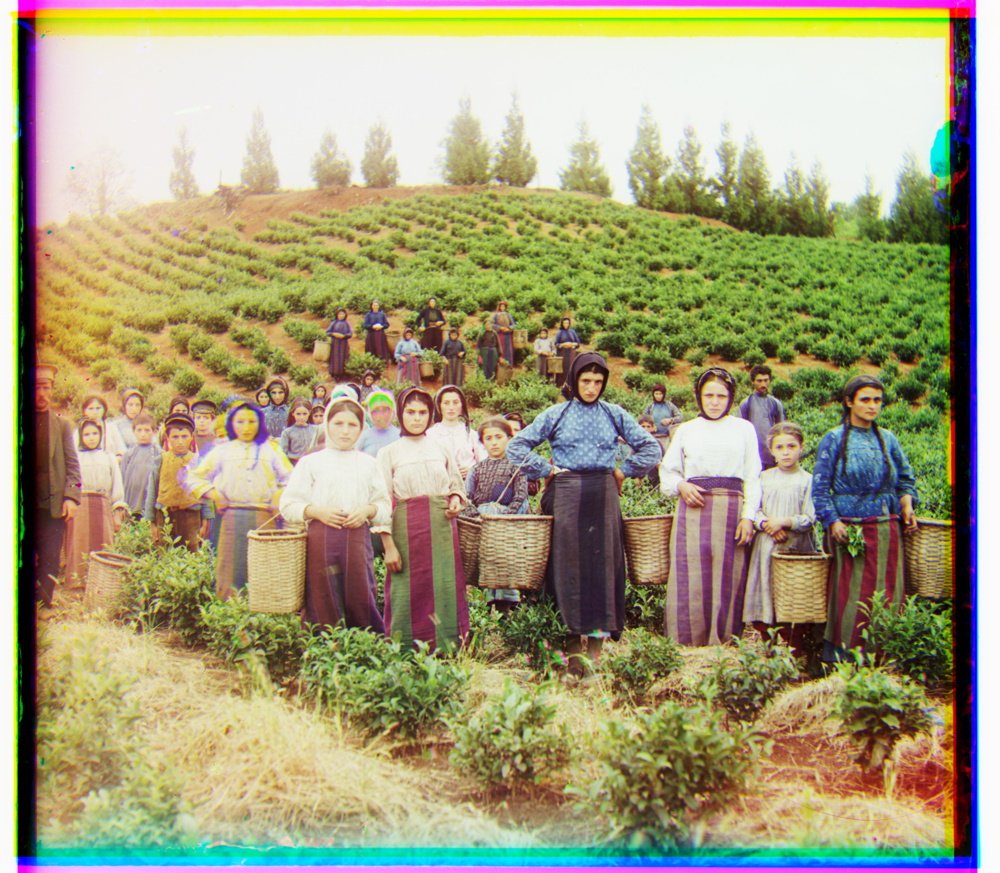
Harvesters
Red: (65, -3)
Blue: (-60, -16)
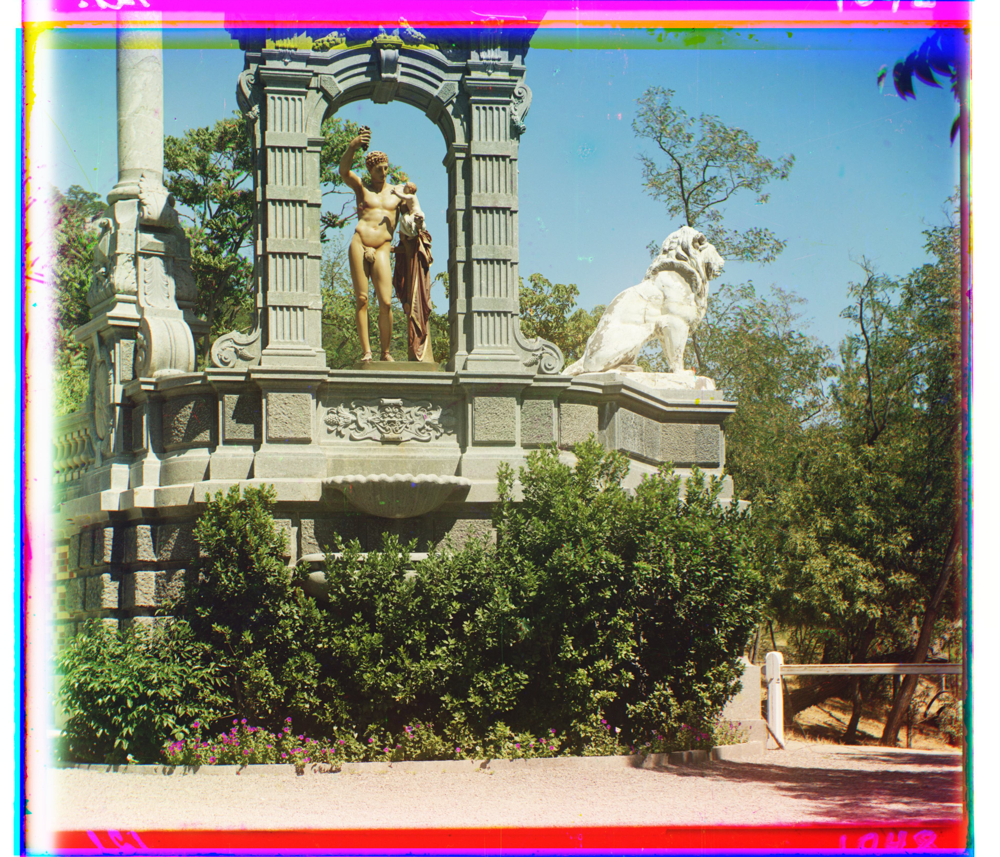
Sculpture
Red: (107, -16)
Blue: (-33, 11)
Three Generations
Red: (58, -1)
Blue: (-54, -11)
Church
Red: (33, -7)
Blue: (-25, 0)
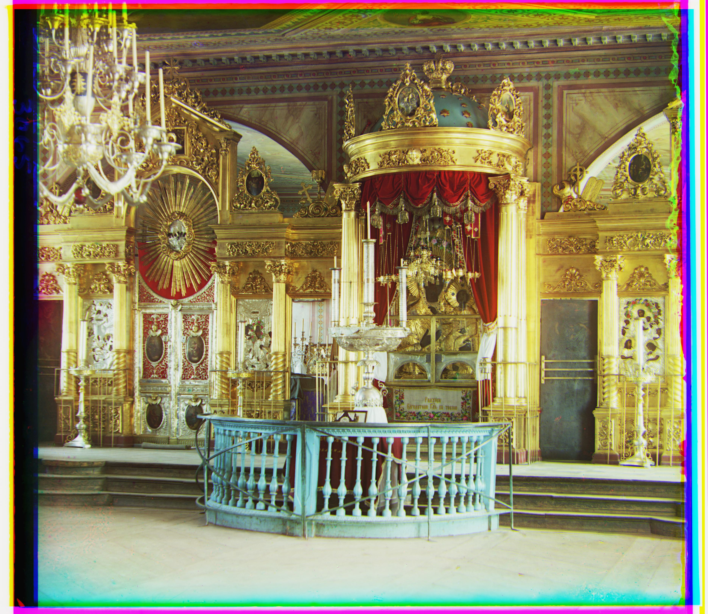
Icon
Red: (48, 5)
Blue: (-40, -17)
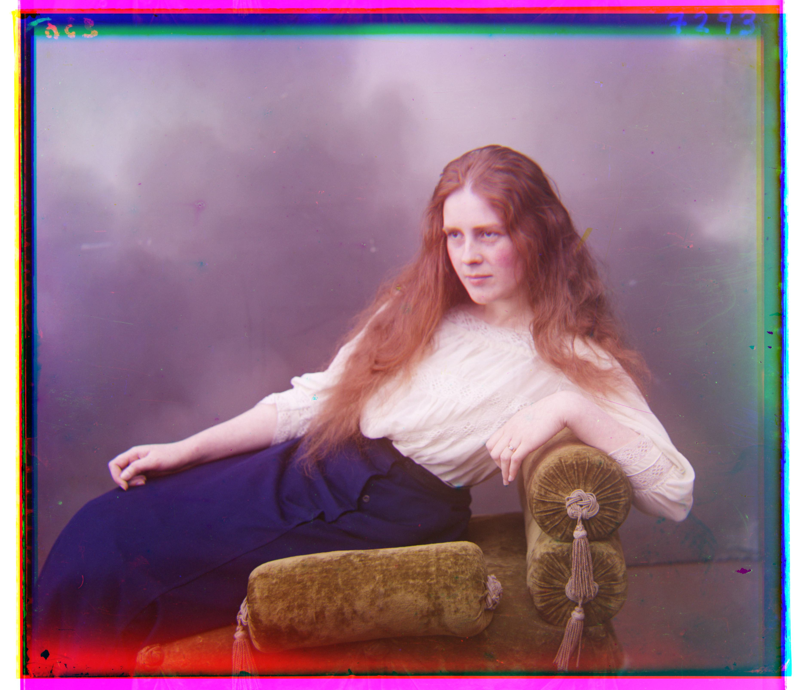
Lady
Red: (63, 3)
Blue: (-53, -8)
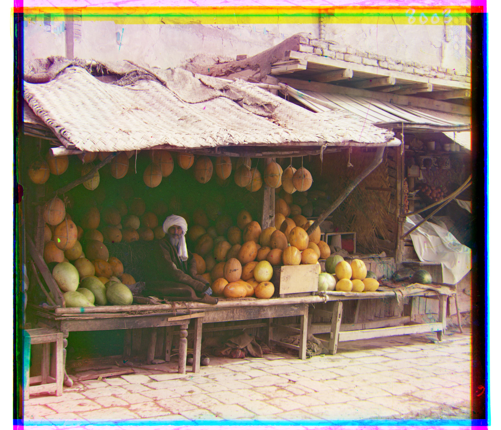
Melons
Red: (96, 3)
Blue: (-82, -8)
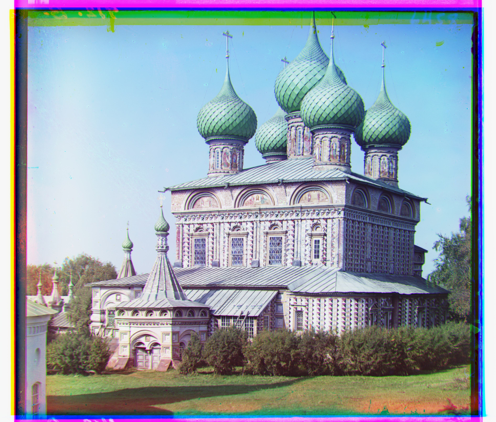
Onion Church
Red: (57, 10)
Blue: (-51, -26)
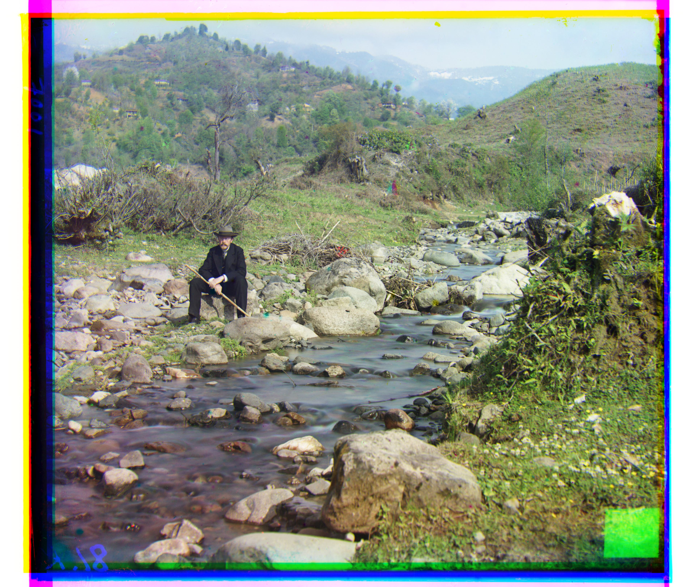
Self Portrait
Red: (98, 8)
Blue: (-78, -28)
Train
Red: (43, 27)
Blue: (-43, -5)
Select Images with Bells & Whistles Method (Edge detector)
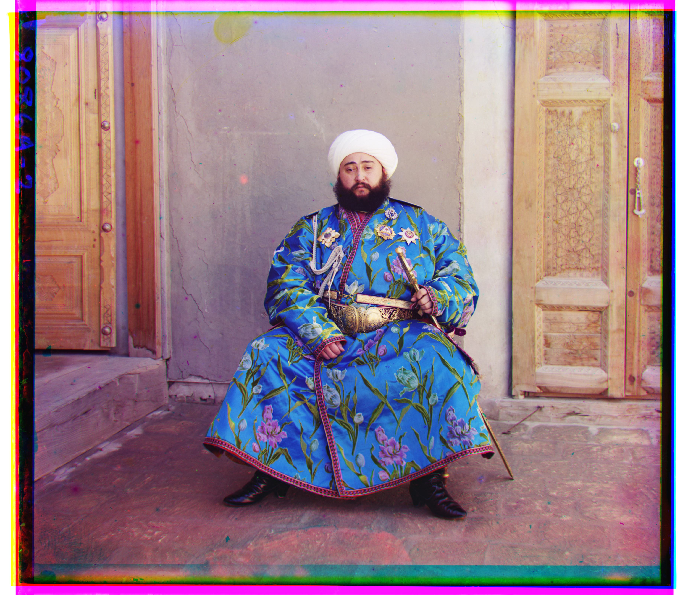
Emir
Red: (58, 17)
Blue: (-49, -23)
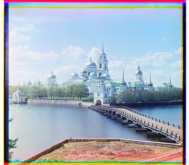
Monastery
Red: (6, 1)
Blue: (3, -2)
Tobolsk
Red: (4, 1)
Blue: (-3, -3)
Harvesters
Red: (64, -3)
Blue: (-60, -17)
Sculpture
Red: (106, -16)
Blue: (-33, 11)
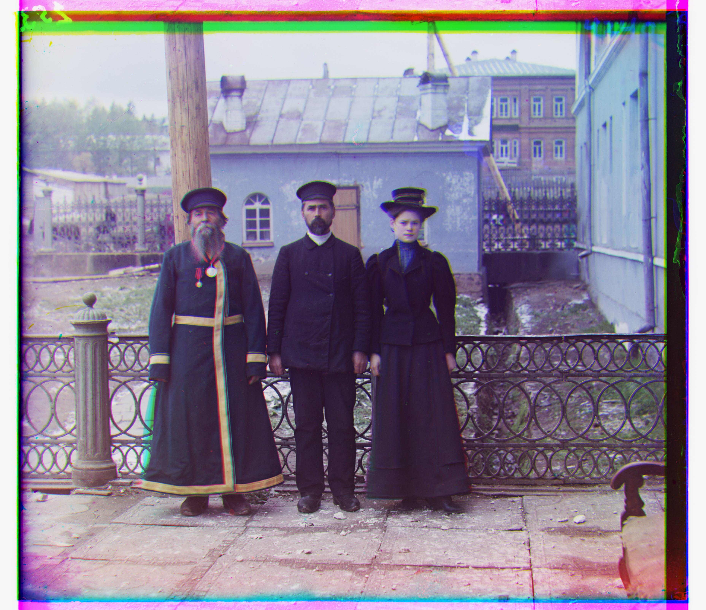
Three Generations
Red: (58, -4)
Blue: (-54, -11)
Church
Red: (33, -8)
Blue: (-25, -4)
Icon
Red: (48, 5)
Blue: (-42, -17)
Lady
Red: (63, 3)
Blue: (-56, -9)
Melons
Red: (96, 3)
Blue: (-80, 10)
Onion Church
Red: (57, 10)
Blue: (-52, -24)
Self Portrait
Red: (98, 8)
Blue: (-78, -29)
Train
Red: (44, 27)
Blue: (-41, -1)
The above pictures showed no discernable differences with the ones created by regular pyramid methods.
The above example illustrated the problem with the regular pyramid on the cathedral image. The one
using edge detectors turned to be much more aligned than the regular approach.
Other Images
Monument
Red: (44, 1)
Blue: (-27, -9)
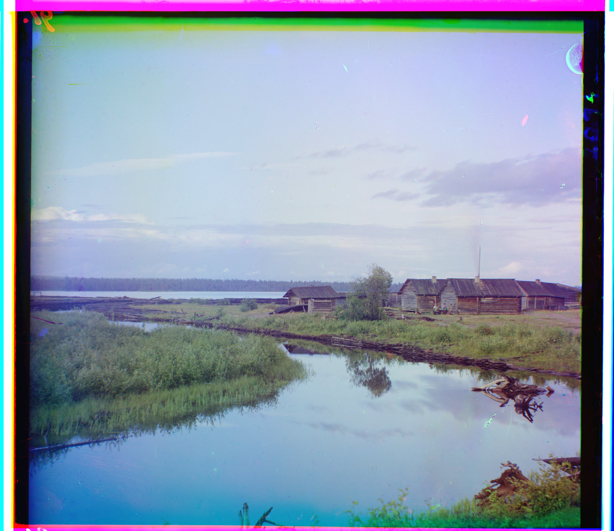
River
Red: (69, 22)
Blue: (-17, -25)
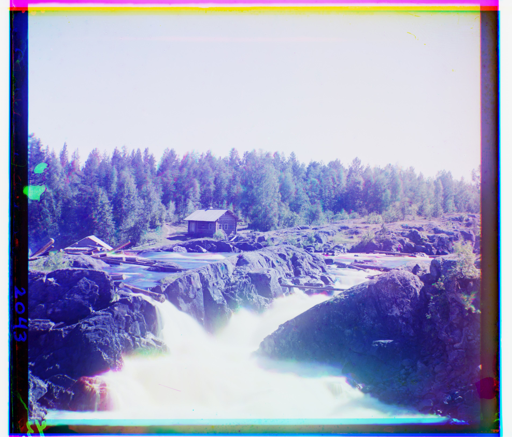
Falls
Red: (79, 0)
Blue: (-27, 1)
Note that the water fall image quality was not very high. This might be because the water was flowing, so the three layers taken at different time
didn't capture the same still frame.